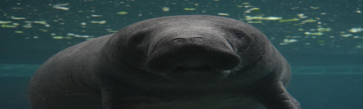
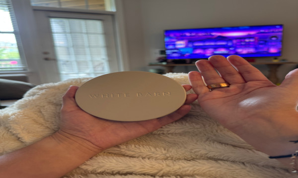
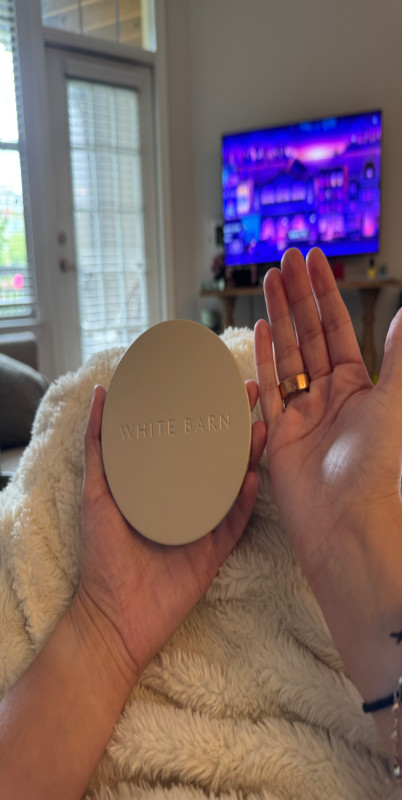

Original Image
Click to open the image in its original JPG format: underwater-manatee-closeup-12237825@jorge-luis-morales_pexels.jpg
This page demonstrates how images behave across different formats, sizes, and proportions on the web. It explores the difference between a large, high-quality source photo and a personal photo taken on a phone, showing how each can be converted to different formats (JPG, GIF, greyscale, black and white), properly resized for the web, improperly stretched or squished, and improperly enlarged from a too-small source. The goal is to understand how image size and proportion choices affect load times, visual quality, and overall site performance.
I chose this photo because it fit the dive and snorkel theme of my course site perfectly, and the close-up framing and fine detail in the manatee's skin texture made it a great candidate for testing how different formats and sizes affect image quality. The photo was taken by photographer Jorge Luis Morales on Pexels, who has a number of other underwater wildlife photos in his portfolio. The original image is a JPG, 6000 x 4000 pixels, and approximately 1.56 MB in size.
Click to open the image in its original JPG format: underwater-manatee-closeup-12237825@jorge-luis-morales_pexels.jpg
Click to open the image in GIF format: underwater-manatee-closeup-12237825@jorge-luis-morales_pexels.gif
Notice the loss of subtle color detail in the water due to GIF's limited 256-color palette.
Click to open the image in greyscale: underwater-manatee-closeup-12237825@jorge-luis-morales_pexels-greyscale.jpg
Click to open the image in pure black and white: underwater-manatee-closeup-12237825@jorge-luis-morales_pexels-blackandwhite.jpg
This version was created using GIMP's Threshold tool, producing only pure black and white pixels.
The following four images all started from the properly resized 600x400 image, but have been stretched or squished to incorrect proportions:


For my personal geometry photo, I chose a round candle lid from White Barn, held next to my hand for scale and proportion comparison. The photo was taken on my iPhone and shows my hands holding the lid in my living room. The original image is 4284 x 5712 pixels.
Click to open the image in its original JPG format: candle-lid-with-hands@emametz.jpg
Click to open the image in GIF format: candle-lid-with-hands@emametz.gif
Notice the reduced color palette compared to the original JPG.
Click to open the image in greyscale: candle-lid-with-hands@emametz-greyscale.jpg
Click to open the image in pure black and white: candle-lid-with-hands@emametz-blackandwhite.jpg
This version was created using GIMP's Threshold tool.

The following four images all started from the properly resized 600x800 image, but have been stretched or squished to incorrect proportions:


I used Claude to help plan the structure of this page and to walk through the GIMP editing process step by step, including converting images to GIF, greyscale, and black and white, properly resizing images, and creating the improperly stretched and enlarged comparison versions.
My biggest challenge was keeping track of all the different exported file versions and making sure I always returned to a clean base image in GIMP before creating each new stretched version, rather than accidentally stacking edits on top of each other. I learned just how much of a difference proper resizing in an image editor makes compared to relying on CSS alone, both in visual quality and file size.